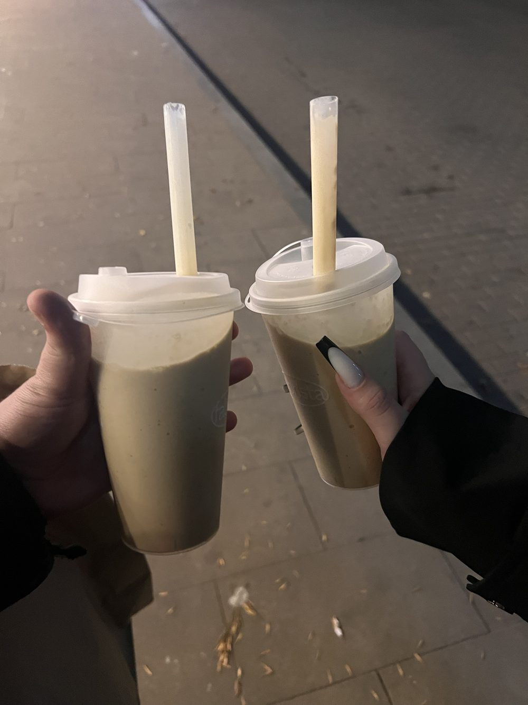
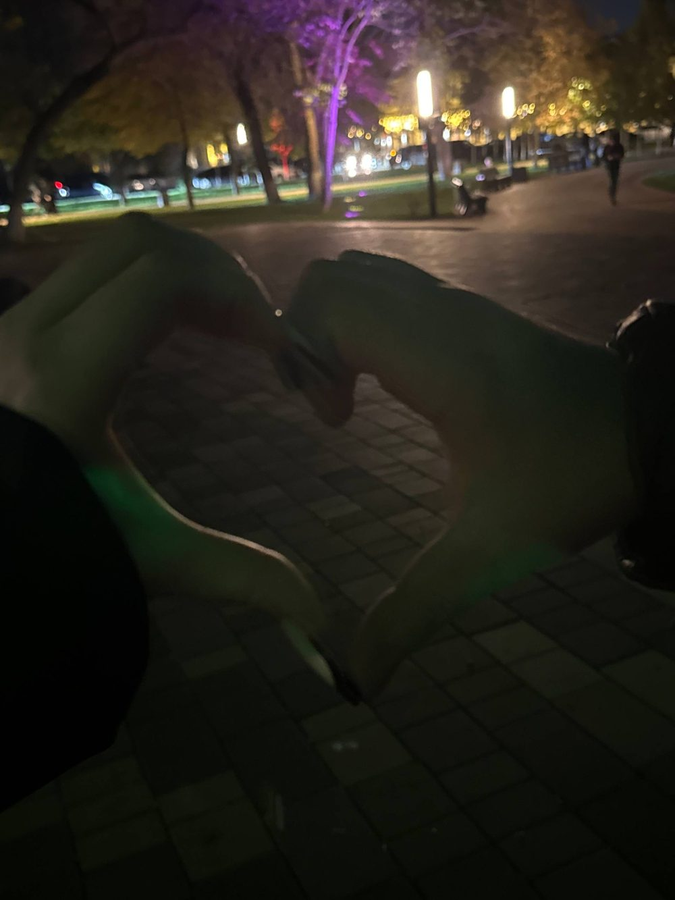
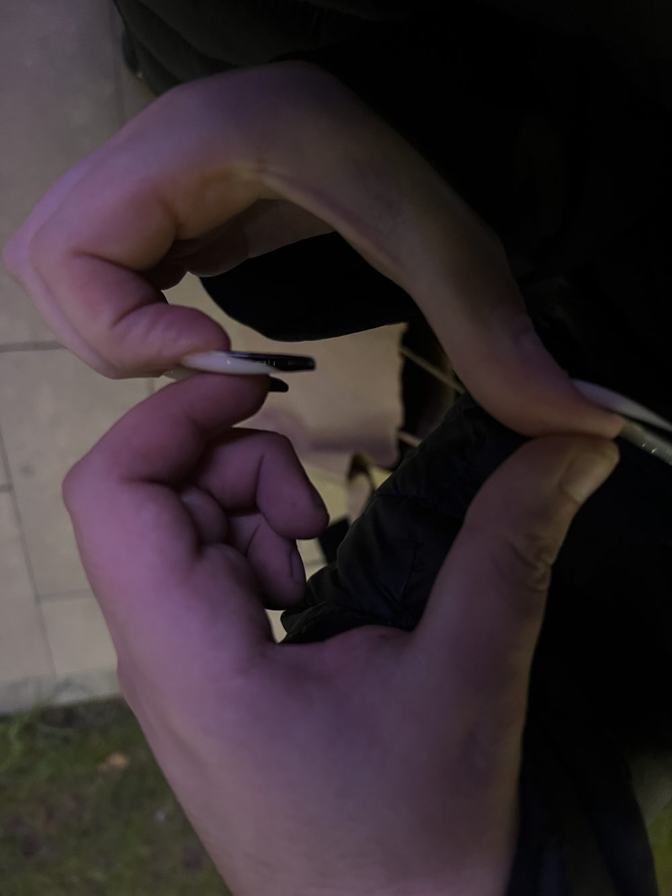
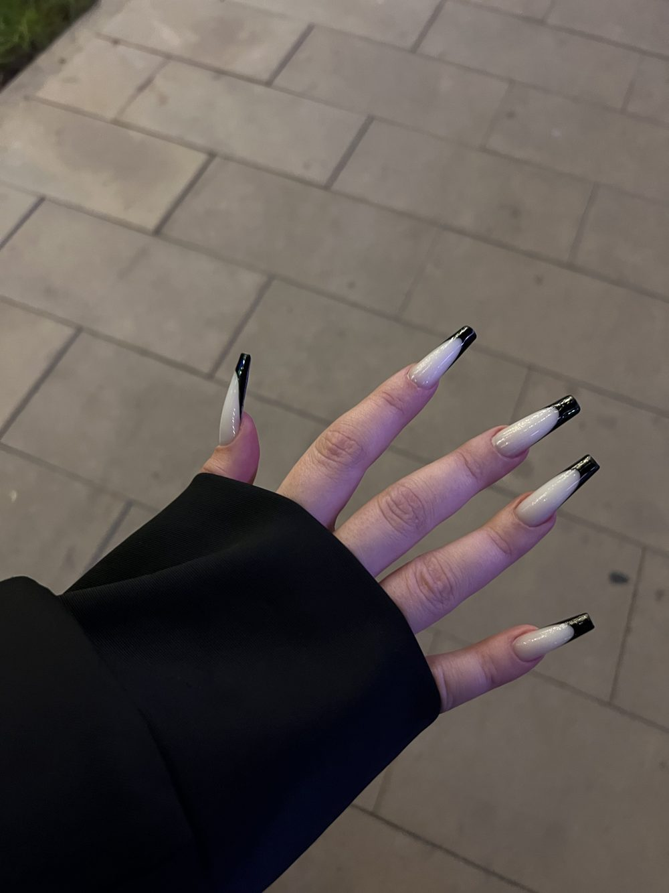

для Джамили
Привет, Джамиля.
Я собрал для тебя маленький кусочек интернета, где всё про нас. Листай вниз потихоньку. Я очень старался, и мне хочется, чтобы ты улыбнулась 😊
листай вниз ↓
Наш вечер
Кофе и прогулка
Два стаканчика, один вечер и никакого плана. Мы пили кофе, гуляли, и мне было так хорошо, что время куда-то делось.

Огни парка
Сердечко из рук
Темно, чуть криво и вообще не по правилам фотографии. Зато от этого сердечка мне и сейчас тепло. Фотограф из меня так себе, а вот компания лучшая.


Происшествие
Ты попала мне по глазу
Ты била меня, и так мило, а потом попала прямо по глазу. Я пострадал, но не в обиде. Вот орудие.

Твоё словечко
Сначала это было твоё слово. Теперь оно и моё. Я говорю его и сразу улыбаюсь, потому что вспоминаю тебя 🥹
Если коротко
За что
- За характер.С ним не соскучишься. Проверено на собственном глазу.
- За глаза.В них легко потеряться. Дорогу назад я пока не ищу.
- За то, кем ты являешься.Просто за то, что это ты. Остальное бонус.
Каждый раз
Все наши встречи искренние.
Ни одной натянутой минуты. С тобой не надо стараться, и это лучшее чувство.
Маленькая кнопка
Если соскучилась
Нажми, и я отвечу.
здесь появится ответ
Главное
Просто признание
Джамиля, ты мне очень нравишься. Больше, чем я успел сказать вслух.
С тобой смешно, спокойно и чуть-чуть опасно. И мне это очень нравится.
Хочу ещё твоих «ужс», ещё прогулок, ещё твоих рук в моих и даже ударов по глазу. А иногда я смотрю на тебя и думаю совсем не про кофе 😏
тот, кому ты попала по глазу
Это только начало нашей истории
и я очень хочу писать её с тобой 💗